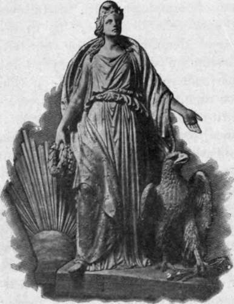

The Goddess Of Freedom
Description
This section is from the book "The National Capitol. Its Architecture Art And History", by George C. Hazelton, Jr. Also available from Amazon: The National Capitol Its Architecture Art and History.
The Goddess Of Freedom
The huge -bronze—variously called " The Goddess of Freedom," "The Goddess of Liberty" and "The Indian Goddess"—which to-day rests upon the great dome-pedestal, for some years awaited its destination in the lawn southeast of the building. Two weeks were consumed in raising it to its present position. It had first been oxidated by an acid solution to produce a rich and uniform tint which, it was thought, would never change under exposure. As the head and shoulders, which were the fifth and crowning section of the figure, were placed in position, at noon on the 2d of December, 1863, a flag was waved from the top of the dome and the field battery in the grounds, thirty-five guns, fired the national salute. This was answered successively by the guns of the forts then guarding the District of Columbia, and by the patriotic cheers of the multitude, who had gathered to see the statue of Freedom—the emblem of a principle which was even then the contention of two mighty armies—raised upon the dome.
The statue, which faces to the east, was designed by Thomas Crawford, the father of the novelist, F. Marion Crawford, in Rome in 1855 ; and cast in the foundry of Clark Mills, near Bladensburg, in the District of Columbia. The original model of the sculptor in plaster had a liberty cap jewelled with a circlet of stars. In October, 1855, Crawford writes to Captain Meigs : " It is quite possible that Mr. Jefferson Davis may, as upon a former occasion, object to the cap of Liberty and the fasces. I can only say in reply that the work is for the people, and they must be addressed in language they understand, and which has become unalterable for the masses.
" The emblems I allude to can never be replaced by any'invention of the artist; all that can be done is to add to them, as I have done, by placing the circlet of stars around the cap of liberty : it thus becomes more picturesque, and nothing of its generally understood signification is lost. All arguments, however, must reduce themselves into the question : 1 Will the people understand it ?' I, therefore, hope the Secretary will allow the emblems to ' pass muster.'
The goddess of freedom (Crawford's original model).
" I have said the statue represents ' armed Liberty.' She rests upon the shield of our country, the triumph of which is made apparent by the wreath held in the same hand which grasps the shield; in her right hand she holds the sheathed sword, to show the fight is over for the present, but ready for use whenever required. The stars upon her brow indicate her heavenly origin; her position upon the globe represents her protection of the American world —the justice of whose cause is made apparent by the emblems supporting it".
The present helmet, surmounted by a crest of eagle plumes, was adopted after considerable correspondence between the Secretary, Captain Meigs and the artist. On March 18, 1856, Crawford writes: " I read with much pleasure the letter* of the honorable Secretary, and his remarks have induced me to dispense with the ' cap' and put in its place a helmet, the crest of which is composed of an eagle's head and a bold arrangement of feathers, suggested by the costume of our Indian tribes." The Secretary's objections to the cap were that it was the Roman badge of emancipation and inappropriate to a free-born people. It has been often asserted that he saw in it a fanciful menace to the South and her institution of slavery.
* War Department, Washington, fan. 15, 1856. Capt. M. C. Meigs, in charge of Capitol Extension, Washington City :
Sir : The second photograph of the statue with which it is proposed to crown the dome of the Capitol, impresses me most favorably. Its general grace and power, striking at first view, has grown on me as I studied its details.
As to the cap, I can only say, without intending to press the objection formerly made, that it seems to me its history renders it inappropriate to a people who were born free and would not be enslaved.
The language of art, like all living tongues, is subject to change ; thus the bundle of rods, if no longer employed to suggest the functions of the Roman Lictor, may lose the symbolic character derived therefrom, and be confined to the single signification drawn from its other source—the fable teaching the instructive lesson that in union there is strength. Hut the liberty cap has an established origin in its use, as the badge of the freed slave ; and though it should have another emblematic meaning to-day, a recurrence to that origin may give to it in the future the same popular acceptation which it had in the past.
Why should not armed Liberty wear a helmet ? Her conflict being over, her cause triumphant, as shown by the other emblems of the statue, the visor would be up so as to permit, as in the photograph, the display of a circle of stars, expressive of endless existence and of heavenly birth. With these remarks I leave the matter to the judgment of Mr Crawford ; and I need hardly say to you, who know my very high appreciation of him, tha» I certainly would not venture, on a question of art, to array my opinion against his.
Very respectfully, your obedient servant,
Jefferson Davis,
Secretary of War.
The right hand of the figure rests upon the hilt of a sheathed sword; her left holds an olive branch, while resting upon a shield. At the waist, a broach bearing the letters " U. S." holds the drapery in place. The statue weighs nearly 15,000 pounds, the weight of the heaviest of the five sections being 4,740 pounds, and is 19 1/2 feet in height. Crawford received $3,000 for the plaster model; Mills, $9,800 for casting it in bronze; and $10,996.82 were paid for labor, iron-work and copper.
It is perhaps well for the statue that its position, while most imposing, places it beyond the critical vision of even those who most highly appreciate Crawford's art. It is unfortunately now neither ancient nor modern, classic nor American. Under several equally inappropriate titles the public, with careless indifference, have come to idealize a mongrel statue which would have possessed more merit and appropriateness, had not politics, as is too often the case in America, contaminated art. It has been proposed to gild the statue. This would but make more glaring its imperfections.
Continue to: